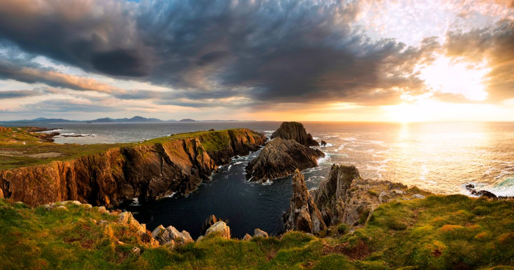
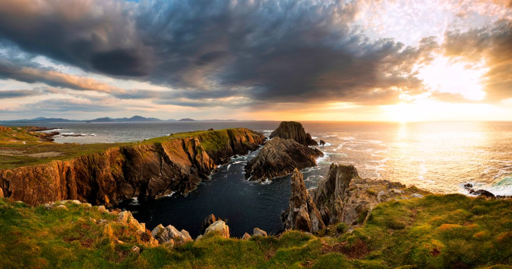
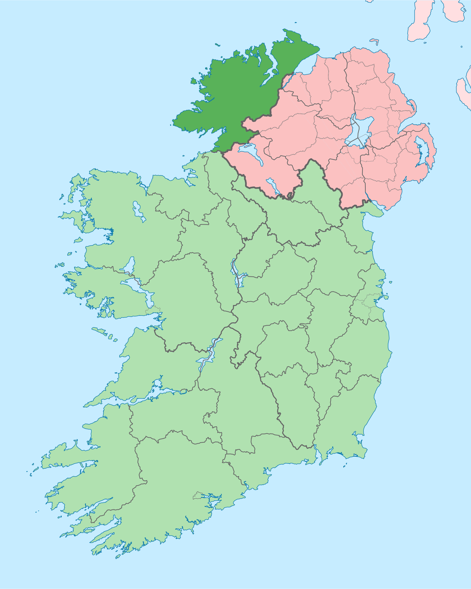

Where is Donegal?
Donegal is situated in the north west of the country. It is the most northern county in Ireland
and it is famous for it's rugged coastline and for it's beauitful scenery and friendly people.
What is Donegal famous for?
Donegal is well known for it's over the top friendly nature when it comes to visitiors. It's not uncommon for travellers to be invited
inside to people's homes, there's no welcoming like a Donegal welcome!
Donegal is also very well known for it's famous scenery, there are many famous locations which will be covered later.
However many tourists recall their trips from the fabrics they bought whilst visiting. Donegal is very famous for it's textiles and wool products
specifically jumpers, scarves and other garments.
Why visit Donegal?
There are numerous adventures awaiting people in the "forgotten lands" of Donegal. Quite literally an adventure for everyone, if you like Irish mytholgy come
and visit Tory Island and learn about Balor Of The Evil Eye and how his son was said to have slain him to save a girl.
If you are interested in hiking or general sight seeing, come visit Errigal mountain, the tallest peak in Donegal.
There is something waiting for everyone, you only need look.
Follow this link to learn more about Donegal!